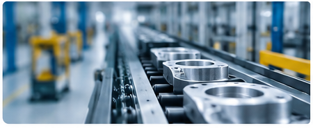

AI
AI triage
Surface defects, risk and uncertainty before release.
KanbAI helps manufacturers detect visual defects, keep quality teams in control and convert verified inspections into a factory-specific learning loop.

Surface defects, risk and uncertainty before release.
Quality teams approve, reject or correct every critical case.
Verified inspections become structured training data.
Retraining turns factory feedback into better models.
KanbAI starts where factories already lose money: manual visual inspection, rework, scrap and undocumented quality decisions.
Operators make high-volume decisions with limited traceability, and defects become cost instead of learning data.
The first pilot measures baseline escape/rework rate, then compares AI-assisted review against the current process.
Once the workflow is trusted, KanbAI expands across stations, defect classes, products and factories.
From inspection to continuous quality improvement, without replacing the quality team.
Get images from a production inspection point.
AI analyzes the product for visual defects and anomalies.
Operators review uncertain or critical cases.
Verified examples feed the next factory-specific model.

The defensibility is not a generic detector. It is the closed loop: inspection context, human decisions, factory-specific datasets and controlled model improvement.
Fits how quality teams already approve production decisions.
Creates labeled datasets that competitors do not have.
Image, AI result, operator action and station context together.
Candidate, staging and production model path for factories.
We begin with one measurable visual quality problem, establish a baseline and compare KanbAI against the existing inspection process.
The near-term objective is narrow and measurable: run a real factory pilot, prove ROI at one inspection point, then expand from workflow adoption into proprietary factory data.
Public demo uses mock/browser analysis only and makes no unsupported factory performance claim.
The product speaks to scrap, rework, auditability and throughput, not only AI novelty.
Human-reviewed inspections compound into datasets, retraining candidates and deployment history.
KanbAI is preparing its angel round.
Talk to the founders ->